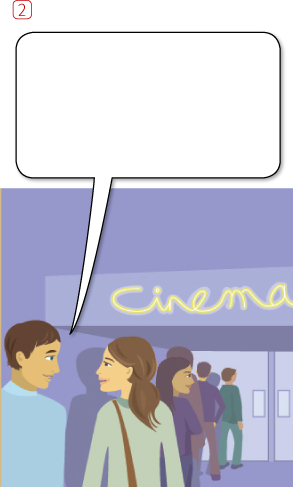
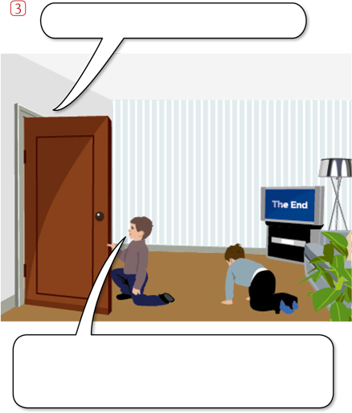

| 1 | The windows are open. |
| 2 | Lisa isn’t happy. |
| 3 | Kate |
| Kate is a doctor. | |
| 4 | |
| The children are asleep. | |
| 5 | |
| Gary isn’t hungry. | |
| 6 | |
| The books aren’t on the table. | |
| 7 | |
| The hotel is near the station. | |
| 8 | |
| The bus isn’t full. |


 Are you interested
Are you interested| 1 | Sarah often / tennis | Sarah often plays tennis. |
| 2 | my parents / a new car | My parents have got a new car. |
| 3 | my shoes / dirty | My shoes are dirty. |
| 4 | Sonia / 32 years old | Sonia |
| Sonia is 32 years old. | ||
| 5 | I / two sisters | |
| I’ve got two sisters. or I have two sisters. | ||
| 6 | we often / TV in the evening | |
| We often watch TV in the evening. | ||
| 7 | Amy never / a hat | |
| Amy never wears a hat. | ||
| 8 | a bicycle / two wheels | |
| A bicycle has (got) two wheels. | ||
| 9 | these flowers / beautiful | |
| These flowers are beautiful. | ||
| 10 | Emma / German very well | |
| Emma speaks German very well. |
|
Please be quiet. |

Do you often go |
What |
|
Jack |
|
|
|
(I/not/watch) TV very |
Excuse me, looking for the museum. |
What’s this word? How
(you/pronounce) it?
What’s this word? How |
|
It was raining (rain) when we went (go) out. |
When I arrived at the office, Lisa and Paul (work) at their desks. When I arrived at the office, Lisa |
|
I (open) the window because it was hot. I opened the window because it |
The doorbell (ring) when Sue (cook). The doorbell rang when Sue was |
|
I (hear) a noise outside, so I (look) out of the window. I heard a noise outside, so I looked |
Tom (look) out of the window when the accident (happen). Tom was looking out of the |
|
Richard had a book in his hand, but he (not/read) it. He (watch) TV. Richard had a book in his hand, |
Catherine bought a magazine, but she (not/read) it. She didn’t have time. Catherine bought a magazine, but |
|
I (finish) my meal, (pay) the bill and (leave) the restaurant. I finished my meal, paid the bill and |
I (see) Kate this morning. I (walk) along the street and she (wait) for the bus. I saw Kate this morning. I was Hi, Kate. |
|
|
Who’s that man? I don’t know. I ’ve never seen him before. |
|
 Are you still watching the film? No, it just . No, it it’s / it has just finished / |
I’m looking for Here they are! I’ve / I have found |
|
Is this a good book? I don’t know. I it. I don’t know. I haven’t read it. |
I’m looking for Jessica.
her?
Yes, she was here a I’m looking for Jessica. Have you |
|
More coffee? No, thanks. I enough. No, thanks. I’ve / I have had |
to Sweden?
Yes, I went there Have you (ever) been to Sweden? |
|
Hi. We to the cinema. Hi. We’ve / We have (just) been |
Enjoy the They’ve / They have gone to a |
|
Paul was asleep in the armchair. He up. He’s / He has (just) woken up. |
How long here? Since 2010. How long have you lived / have you been living here? |
|
Do you Yes, we’ve / we have known each |
The weather is horrible here. It all day. It’s / It has been raining all day. |
| 1 | (yesterday morning) | I was late for work yesterday morning. |
| 2 | (last night) | |
| I didn’t go out last night. | ||
| 3 | (yesterday afternoon) | |
| I was at work yesterday afternoon. | ||
| 4 | (… days ago) | |
| I went to a party a few days ago. | ||
| 5 | (last week) | |
| It was my birthday last week. | ||
| 6 | (last year) | |
| I went to America last year. |
|
|
| These houses were built 20 years ago. Before that there was a cinema here, but the building was damaged in a fire and had to be knocked down. |
This bridge was built in 1955. It is used by hundreds of people every day. At the moment the bridge is being painted. |
|
|
| This street is called Wilton Street. It used to be called James Street, but the name was changed a few years ago. |
This is a bicycle factory. Bicycles have been made here since 1971. It’s the largest bicycle factory in the country. Thousands of bicycles are produced here every year. |
| 1 | Somebody has stolen my keys. | My keys have been stolen. | |
| 2 | Somebody stole my car last week. | My car | |
| My car was stolen last week. | |||
| 3 | Somebody has eaten all the bananas. | All the | |
| All the bananas have been eaten. | |||
| 4 | Somebody will repair the machine. | The | |
| The machine will be repaired. | |||
| 5 | Somebody is watching us. | We | |
| We’re / We are being watched. | |||
| 6 | Somebody has to do the housework. | The | |
| The housework has to be done. |

|
Can you pass the sugar , please? |
Have you got ? No, I can’t drive. Have you got a car? |
|
Do you have any milk? Yes, there’s some in . Yes, there’s some in the fridge. |
What do you do? I’m . I’m a teacher. |
|
I don’t feel very well. I don’t want to go to . I don’t feel very well. I don’t want to |
What did you do last night? I went to . I went to the cinema. |
|
Shall we walk home? No, let’s get . No, let’s get a taxi. |
Can you play ? Yes, but not very well.
Can you play the piano? |
|
I’m interested in .
I’m interested in cars. |
What’s the difference between those cars? Nothing, they’re . Nothing, they’re the same. |